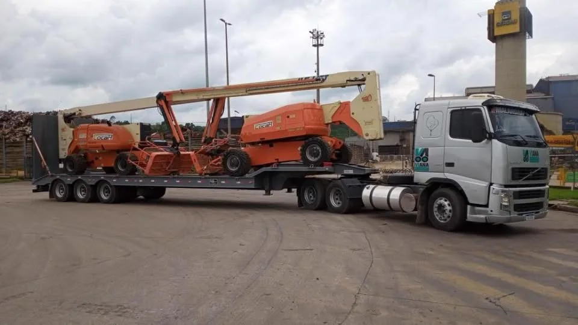

Uma empresa construída no transporte
A Barbosa Fretes e Cargas é fundada em Itumbiara, Goiás, por Eleomar Pereira e Katiana Rita da Silva.

A Barbosa Fretes nasceu da vivência na estrada e da vontade de transformar conhecimento prático em um atendimento mais próximo, responsável e claro.
Fundada em 4 de fevereiro de 2016 por Eleomar Pereira e Katiana Rita da Silva, a Barbosa Fretes e Cargas começou com a convicção de que cada transporte pede escuta, planejamento e responsabilidade.
Desde então, a empresa reúne experiência prática para organizar operações de cargas secas, fracionadas, lotações e demandas especiais — de matérias-primas a equipamentos. A conversa começa pelo que precisa ser movimentado, pela rota e pela urgência de quem confia na operação.
Mais do que deslocar cargas, buscamos dar clareza ao processo: alinhar informações, compreender o cenário e construir uma proposta compatível com a necessidade do cliente.
Uma história em andamento, fortalecida pela atenção aos detalhes de cada operação.
A Barbosa Fretes e Cargas é fundada em Itumbiara, Goiás, por Eleomar Pereira e Katiana Rita da Silva.
O atendimento passa a reunir cargas secas, fracionadas, lotações e demandas especiais, sempre conforme a necessidade da rota.
Com rotas em todo o Brasil, seguimos começando cada operação pela carga, pelo destino e pelo nível de urgência de cada cliente.